satisfaccion <- c("boa", "boa", "regular", "moi boa", "mala", "boa", "boa", "regular", "moi mala", "boa", "moi boa", "moi boa", "regular", "boa", "mala", "boa", "moi boa", "moi boa", "boa", "regular")1 Estatística descritiva
Como comentamos nas sesións expositivas, unha análise estatística normalmente comeza cun conxunto de datos que usamos como mostra representativa dunha poboación máis ampla. O obxectivo da estatística descritiva é organizar, resumir e presentar a información contida nesta mostra, empregando principalmente táboas de frecuencias, medidas numéricas e representacións gráficas.
Esta fase, relacionada coa análise exploratoria de datos (EDA, polas súas siglas en inglés), tamén inclúe o preprocesado dos datos como paso fundamental. Nesta etapa realízanse tarefas como eliminar ou imputar valores ausentes, corrixir formatos incorrectos e detectar e tratar valores atípicos.
1.1 Táboas de frecuencias
Unha táboa de frecuencias está composta por varias columnas: as frecuencias absolutas, as frecuencias relativas e as súas correspondentes acumuladas, cando teñan sentido. Comezaremos por obter as frecuencias absolutas, para o que se utiliza a función table(). No caso das frecuencias relativas é tan sinxelo como dividir as frecuencias absolutas previamente calculadas entre o tamaño muestral, que se pode obter facilmente coa función length().
Consideremos unha mostra de 20 observacións da variable \(X=\) Satisfacción co servizo de atención ao cliente, que introducimos en R do seguinte modo:
Esta variable así definida é almacenada en R como unha variable de tipo carácter. Para facela de tipo factor (que é o tipo de variables que R emprega para as variables cualitativas) e que permite comprender que existen unhas determinadas categorías que se van repetindo na nosa mostra faremos:
satisfaccion <- as.factor(satisfaccion)
levels(satisfaccion)Por defecto, e tal e como se observa na saída, R ordena as categorías alfabeticamente. Se queremos que aparezan nunha orde “lóxica” debemos de permutarlas segundo ese criterio:
satisfaccion <- factor(satisfaccion, levels = levels(satisfaccion)[c(4, 2, 5, 1, 3)])
levels(satisfaccion)Nun primeiro lugar obteremos as frecuencias absolutas e relativas:
Fabs <- table(satisfaccion)
FabsFrel <- table(satisfaccion) / length(satisfaccion)
FrelPara obter as frecuencias acumuladas (tanto absolutas como relativas) que neste caso ten sentido calcular por tratarse dunha variable cualitativa ordinal, utilízase a función cumsum():
FabsAcum <- cumsum(Fabs)
FabsAcumFrelAcum <- cumsum(Frel)
FrelAcumPara ver a táboa de frecuencias completa, podemos “pegar por columnas” os vectores calculados previamente coa función cbind():
Taboa <- cbind(Fabs, Frel, FabsAcum, FrelAcum)
TaboaVexamos agora un exemplo con datos reais. No conxunto de datos quine da libraría MASS recóllese información sobre o absentismo escolar de 146 escolares en Nova Gales (Australia). A función head() amosa as primeiras filas do conxunto de datos. Entre as variables recollidas están o sexo (Sex) e a idade (Age) medida en grupos. Para construír as correspondentes táboas de frecuencias empregaremos o seguinte código (hai que ter en conta que a variable Age está categorizada e é cualitativa ordinal, mentres que Sex é cualitativa nominal).
library(MASS)
head(quine)
ni <- table(quine$Age)
fi <- ni / length(quine$Age)
Nin <- cumsum(ni)
Fi <- cumsum(fi)
tabAge <- cbind(ni, fi, Nin, Fi)
tabAgePodemos estar interesados en redondear a un número de cifras decimais concreto, para o que podemos utilizar a función round().
tabAge <- round(tabAge, 2)
tabAgePara a variable Sex non calculamos frecuencias acumulados, pois non ten sentido.
ni <- table(quine$Sex)
fi <- ni / length(quine$Sex)
tabSex <- cbind(ni, fi)
tabSex1.2 Representacións gráficas
As representacións gráficas máis simples para variables cualitativas ou cuantitativas discretas son o diagrama de barras e o diagrama de sectores, como vimos no Tema 1. Sobre os datos do exemplo inicial sobre a variable \(X=\) Satisfacción co servizo de atención ao cliente, poderiamos construír un diagrama de barras executando:
barplot(table(satisfaccion), ylab = "Proporción", col = 4)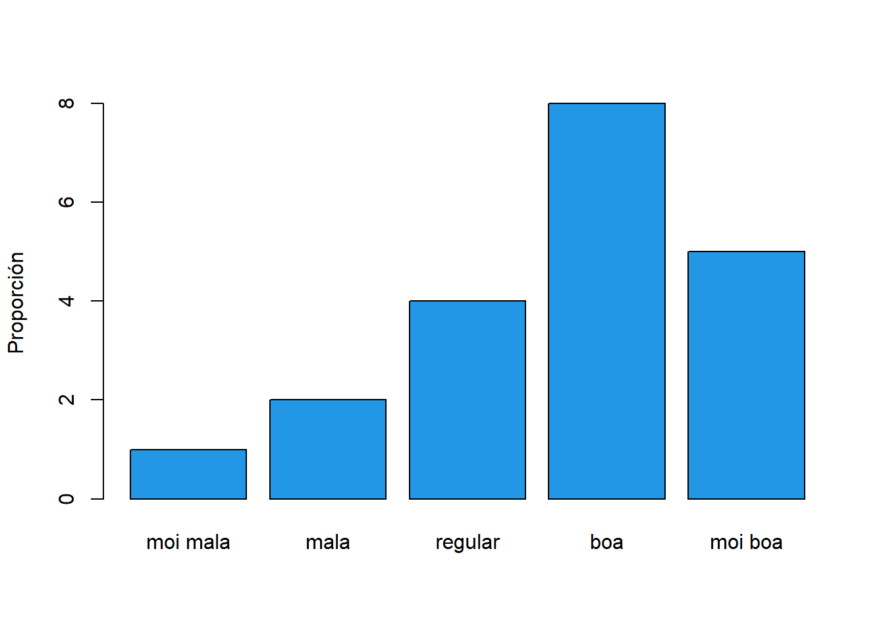
e para debuxar o diagrama de sectores fariamos:
pie(table(satisfaccion), main = "Satisfacción", col = c("red", "blue", "green", "orange", "purple"))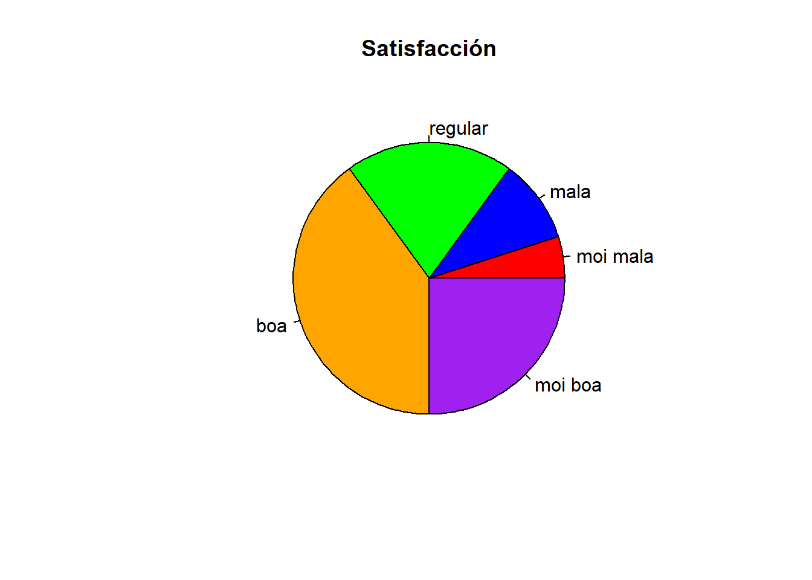
Nótese que calquera das representacións anteriores poderíanse obter para unha táboa de frecuencias relativas simplemente dividindo entre o tamaño muestral, é dicir, length(satisfaccion).
No caso do exemplo con datos reais, representaremos tanto Age como Sex mediante diagramas de barras, na primeira farémolo coas frecuencias absolutas e na segunda coas relativas:
barplot(table(quine$Age), ylab = "Frecuencias absolutas", col = 3)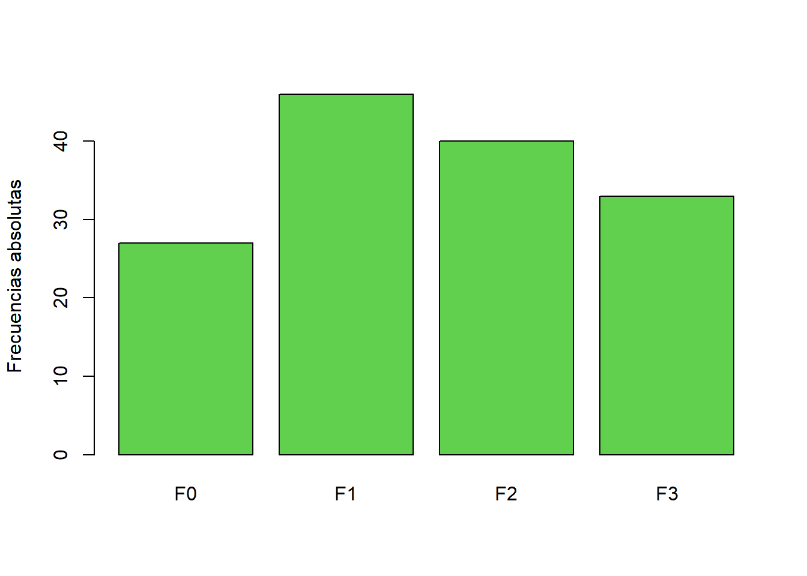
barplot(table(quine$Sex) / length(quine$Sex), ylab = "Frecuencias relativas", col = 3)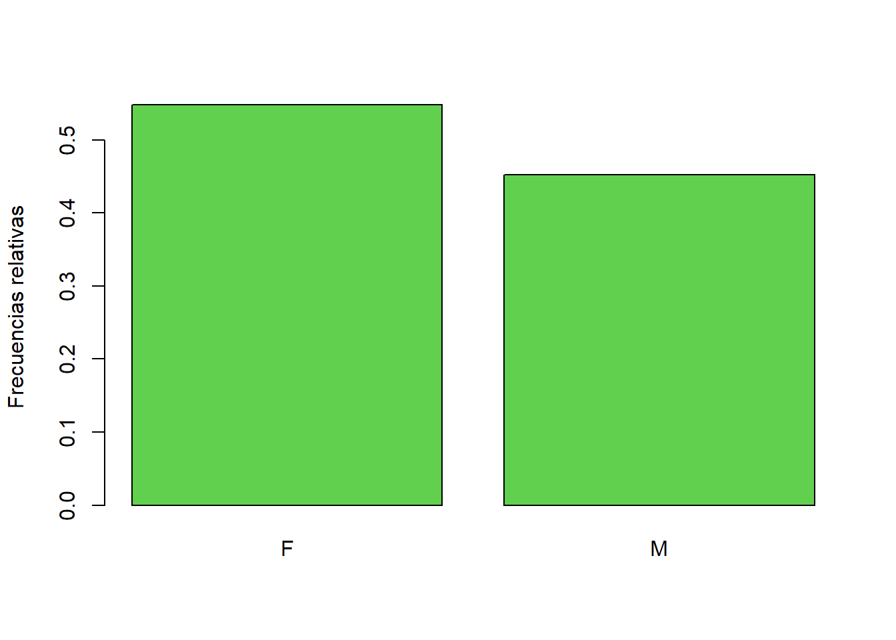
Para variables cuantitativas continuas consideremos o exemplo dos datos do geyser Old Faithful, dispoñible dentro da libraría MASS no datase geyser:
library(MASS)
names(geyser)
duration <- geyser$durationSe debuxamos un diagrama de barras ou un diagrama de sectores para os datos de duración de erupciones:
barplot(duration)
pie(duration)ponse de manifesto que ningún deles resulta informativo cando se aplican sobre variables cuantitativas continuas (como xa sabiamos pola teoría estudada). Unha forma de poder aplicalos é categorizando, ou facendo un resumo dos valores da variable por intervalos, aínda que iso leva certa perdida de información.
Un dos gráficos adecuados para este tipo de datos é o histograma, que podemos debuxar en frecuencias absolutas ou relativas empregando a función hist() co argumento freq=FALSE para a densidade de frecuencia.
hist(duration, main = "Histograma do tempo de erupción", xlab = "tempo")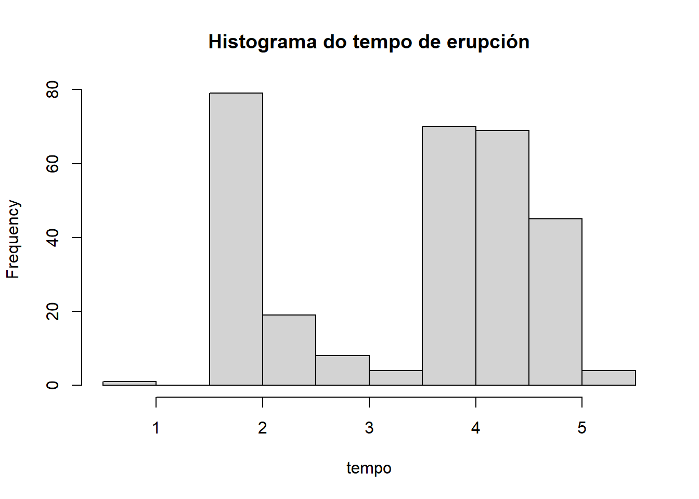
hist(duration, main = "Histograma do tempo de erupción", xlab = "tempo", freq = F)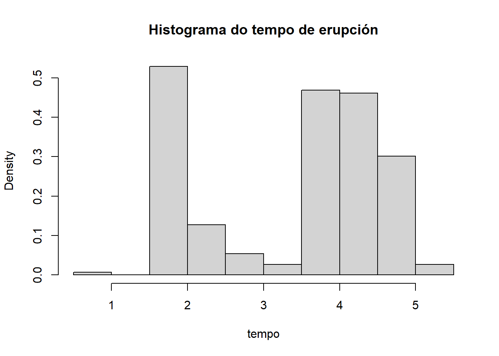
O histograma é sensible ao número de intervalos que se consideran. A continuación mostramos histogramas para distintos números de intervalos. En R, isto contrólase mediante o argumento breaks, que define como se dividen os datos. Se se lle pasa un valor numérico, R tentará crear aproximadamente ese número de intervalos. Tamén se poden especificar os puntos de corte exactos dos intervalos, garantindo así o número e a posición exacta das barras do histograma.
par(mfrow = c(2, 2))
hist(duration, freq = F, breaks = 4, col = 2, main = "Histograma do tempo de erupción")
hist(duration, freq = F, breaks = 9, col = 2, main = "Histograma do tempo de erupción")
hist(duration, freq = F, breaks = 24, col = 2, main = "Histograma do tempo de erupción")
hist(duration, freq = F, breaks = 49, col = 2, main = "Histograma do tempo de erupción")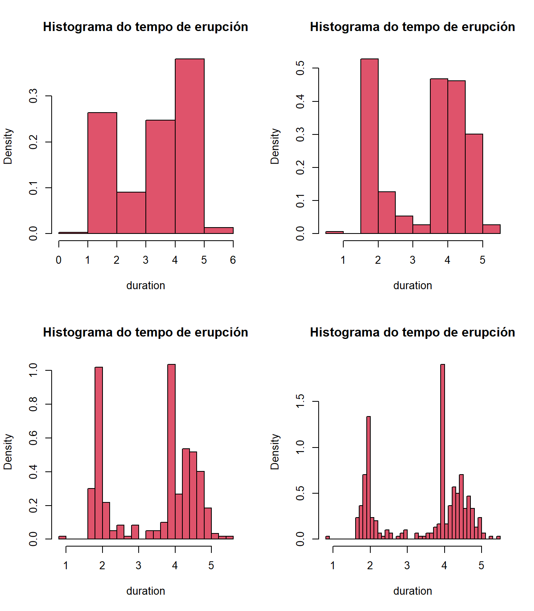
1.3 Medidas características
A función summary() proporciónanos información xeral sobre calquera variable. No caso de variables cuantitativas, o que devolve é o valor do mínimo, o máximo, a media e os cuartiles. Para variables cualitativas é máis simple e devolve unicamente un reconto por categorías, é dicir, as frecuencias absolutas (e por tanto o mesmo que a función table que vimos anteriomente).
Para calcular a media muestral utilizamos a función mean() coa que tamén se poden obter medias truncadas mediante o argumento trim, que nos permite introducir unha fracción (de 0 a 0.5) que indica a porcentaxe de datos máis altos e máis baixos que se eliminan. Deste xeito, obtense unha media robustificada no sentido de que xa non é tan sensible á presenza de datos atípicos.
Non existe unha función en R que calcule a varianza muestral. A función var() devolve a case-varianza muestral, polo que debemos transformar o resultado para obter a varianza: \[s_c^2=\frac{1}{n-1}\sum_{i=1}^n(x_i-\bar x)^2 \Longrightarrow s^2=\frac{n-1}{n}s_c^2.\]
Do mesmo xeito que ocorre coa función var(), a función sd() proporciona a case-desviación típica muestral, se queremos calcular a desviación típica muestral podemos obtela empregando a súa definición como raíz cadrada da varianza.
Outras funcións para obter medidas características que se viron no Tema 1 son:
median()para calcular a mediana muestral.min()para calcular o mínimo da mostra.max()para calcular o máximo da mostradiff(range())para calcular o rango muestral.quantile()para calcular diferentes cuantiles muestrales adaptando o argumentoprobs.IQR()para calcular o rango intercuartílico da mostra.
Retomemos o exemplo dos datos de geyser da libraría MASS e a variable duration para a que calcularemos algunhas destas medidas:
mean(duration) # media
median(duration) # mediana
quantile(duration, probs = 0.7) # cuantil 0.7
quantile(duration, probs = c(0.25, 0.5, 0.75)) # cuartiles
var(duration) # case-varianza
diff(range(duration)) # rangoPódennos interesar tamén a simetría e a forma da variable. Para obter os coeficientes de asimetría e curtosis, debemos cargar a libraría moments. As funcións a utilizar son:
skewness()para calcular o coeficiente de asimetría.kurtosis()para calcular o coeficiente de curtosis.
library(moments)
skewness(duration)
kurtosis(duration)Como tamén vimos, unha forma de resumir a información das medidas características é representando un diagrama de caixa ou Box-Plot. Obteriamos esta representación en R da seguinte forma:
boxplot(duration)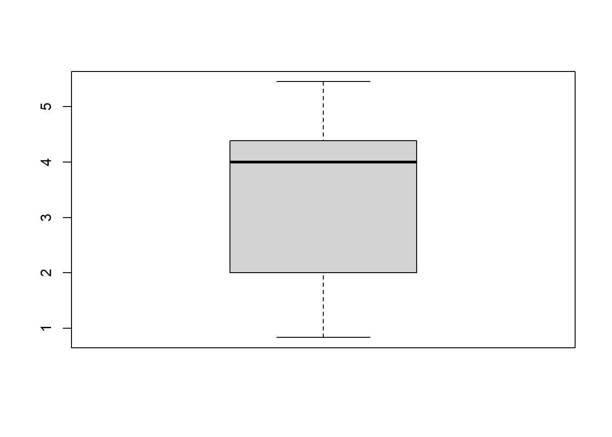
O diagrama de caixa ou Box-Plot resume nun único gráfico algunhas das medidas de centralización e dispersión máis usadas en estatística. A barra negra central mostra onde se sitúa a mediana, mentres que os extremos da caixa son o primeiro cuartil, \(Q_{1}\) (inferior) e o terceiro cuartil, \(Q_{3}\) (superior). Deste xeito, a altura da caixa é o rango intercuantílico \(Q_{3}-Q_{1}\). No caso de que a variable sexa simétrica, a mediana ha de situarse nun punto equidistante de ambos os cuartiles e coincidirá coa media. Os extremos das barras do Box-Plot (bigotes) representan os límites superior e inferior. As observacións que caian fose destes límites son datos atípicos.
Vexamos agora un novo exemplo con datos de calidade de aire. O conxunto de datos airquality contén información sobre calidade do aire. Entre outras variables, recóllese a velocidade de vento rexistrada (Wind), en millas por hora, que se trata dunha variable cuantitativa continua. Para representar gráficamente esta variable necesitamos:
names(airquality)hist(airquality$Wind, col = "blue", main = "Histograma", xlab = "Velocidade do vento")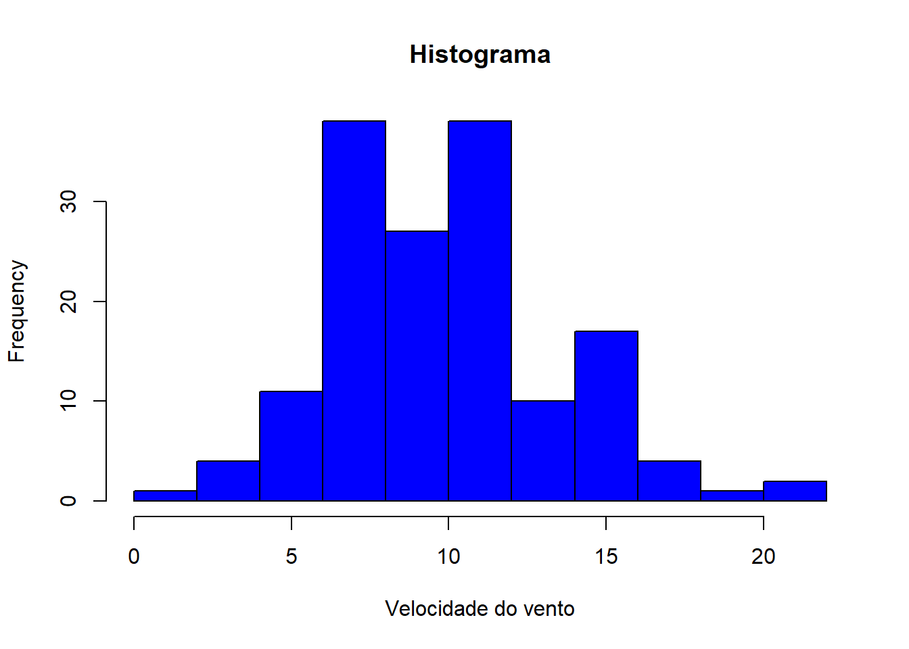
boxplot(airquality$Wind, col = "purple", main = "Diagrama de caixa", xlab = "Velocidade do vento")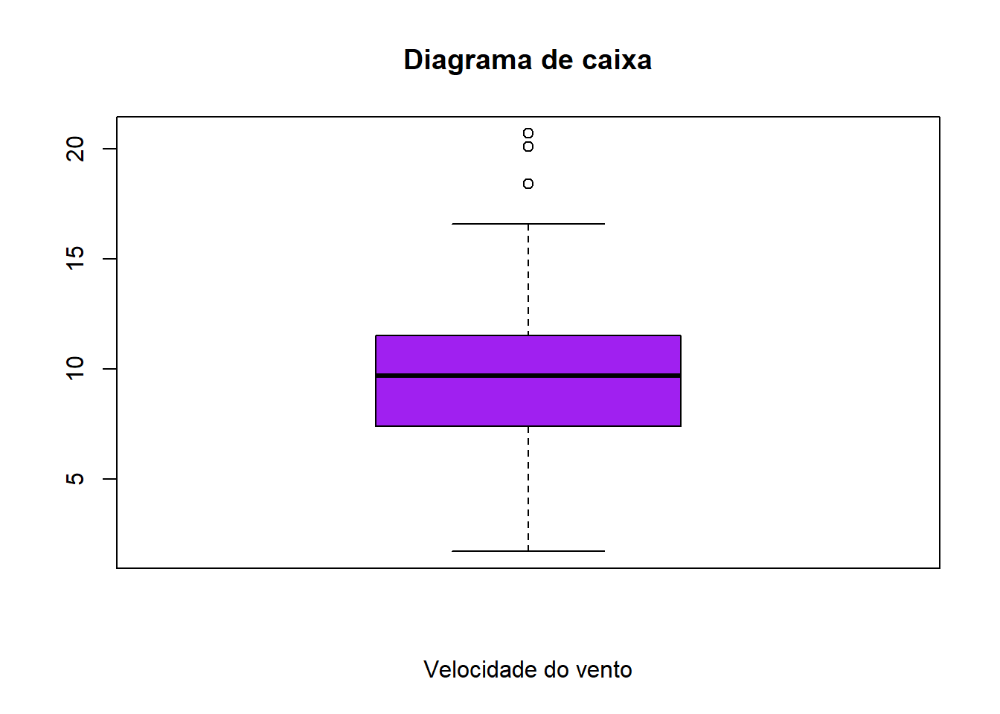
1.4 Tipificación e transformación de datos en R
En moitas análises estatísticas é útil tipificar os datos (converter a escala para que teñan media 0 e desviación estándar 1) ou aplicar transformacións como o logaritmo para normalizar distribucións sesgadas.
1.4.1 Tipificar datos
Para tipificar un conxunto de observacións en R podemos usar a función scale(). Usaremos como exemplo os datos da columna Ozone en airquality.
ozone <- airquality$Ozone
mean(ozone, na.rm = TRUE)
sd(ozone, na.rm = TRUE)
ozone_tipificado <- scale(ozone)
mean(ozone_tipificado, na.rm = TRUE)
sd(ozone_tipificado, na.rm = TRUE)Observa que airquality$Ozone contén algúns valores NA. Se se executa directamente mean(airquality$Ozone) o resultado tamén será NA. Por iso, para calcular a media ignorando os valores ausentes, usamos o argumento na.rm = TRUE.
Representamos a continuación os histogramas dos datos orixinais e os datos estandarizados.
par(mfrow = c(1, 2))
hist(ozone, main = "Ozone sen tipificar", col = "lightblue", xlab = "Ozone")
hist(ozone_tipificado, main = "Ozone tipificado", col = "lightgreen", xlab = "Ozone (tipificado)")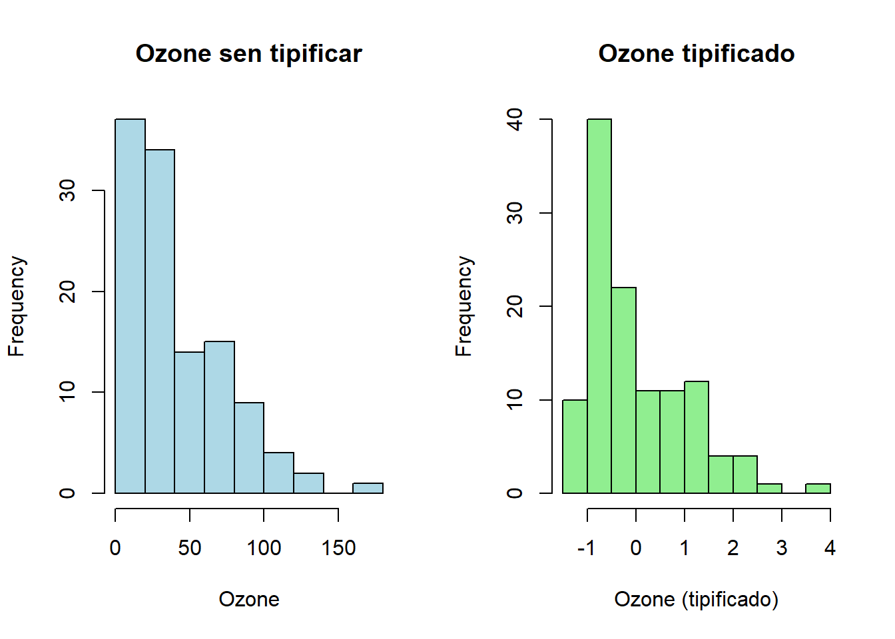
1.4.2 Transformación de datos
En moitos caso, como ocorre coa variable Ozone, os datos presentan unha distribución sesgada con algúns valores moi altos, o que pode dificultar a análise e a visualización. Aplicar neses casos unha transformación logarítmica axuda a reducir esta asimetría, aproximando a distribución a unha forma máis normal.
par(mfrow = c(2, 2))
hist(ozone, col = "lightblue", xlab = "Ozone")
hist(log(ozone), col = "lightgreen", xlab = "log(Ozone)")
boxplot(ozone, col = "lightblue", xlab = "Ozone")
boxplot(log(ozone), col = "lightgreen", xlab = "log(Ozone)")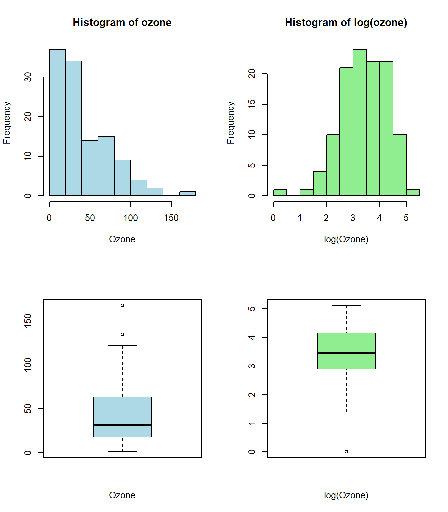
1.5 Estatística descritiva bidimensional
O obxectivo fundamental deste apartado é introducir os principais procedementos que R pon á nosa disposición para o estudo da estatística descritiva con dúas variables.
1.5.1 Táboas de continxencia
A función table() tamén permite construír táboas de continxencia nas cales se representan datos de dúas (ou máis) variables categorizadas. Para o exemplo dos datos de absentismo escolar cos que xa traballamos con anterioridade, podemos representar, de maneira conxunta, aos individuos segundo sexo e idade, así como obter as distribucións marxinais coa función margin.table() e completar a táboa coa función addmargins() da seguinte forma:
Taboa <- table(quine$Age, quine$Sex)
Taboa
margin.table(Taboa, 1)
margin.table(Taboa, 2)
addmargins(Taboa)Nota. O cálculo das distribucións marxinais tamén pode facerse usando as funcións colSums(), cbind(), rowSums() e rbind().
1.5.2 Boxplot para unha variable continua segundo unha categórica
Xa vimos que o diagrama de caixa (boxplot) é unha ferramenta gráfica moi útil para analizar a distribución dunha variable cuantitativa continua, xa que permite visualizar de maneira sintética medidas de posición (mediana e cuartís), dispersión e posibles valores atípicos.
Cando se combina unha variable continua cunha categórica, o boxplot resulta especialmente informativo: constrúese un diagrama de caixa para cada categoría, o que facilita a comparación das distribucións da variable continua entre os distintos grupos. Deste xeito pódense detectar diferenzas na tendencia central, na variabilidade ou na presenza de valores extremos segundo a categoría considerada, sendo unha representación moi habitual na análise exploratoria de datos.
Por exemplo, cos datos de airquality podemos representar mediante diagramas de caixa os valores da temperatura (Temp) en función do mes (Month). Cada caixa corresponde a un mes distinto, que no conxunto de datos airquality vai de maio (5) a setembro (9).
boxplot(
airquality$Ozone ~ airquality$Month,
main = "Distribución da concentración de ozono por mes",
xlab = "Mes",
ylab = "Concentración de ozono"
)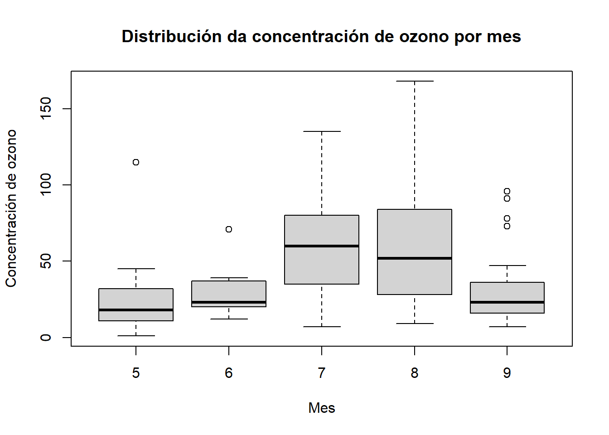
1.5.3 Análise de dúas variables cuantitativas
Agora imos analizar de forma conxunta dúas variables continuas do conxunto de datos airquality.
En primeiro lugar consideramos a temperatura (Temp) e a velocidade do vento (Wind). Gardamos cada unha nunha variable e representamos o diagrama de dispersión correspondente coa función plot().
x <- airquality$Temp
y <- airquality$Wind
plot(x, y,
main = "Diagrama de dispersión de Temp e Ozone",
xlab = "Temperatura (ºF)",
ylab = "Vento (mph)",
pch = 19, col = "steelblue"
)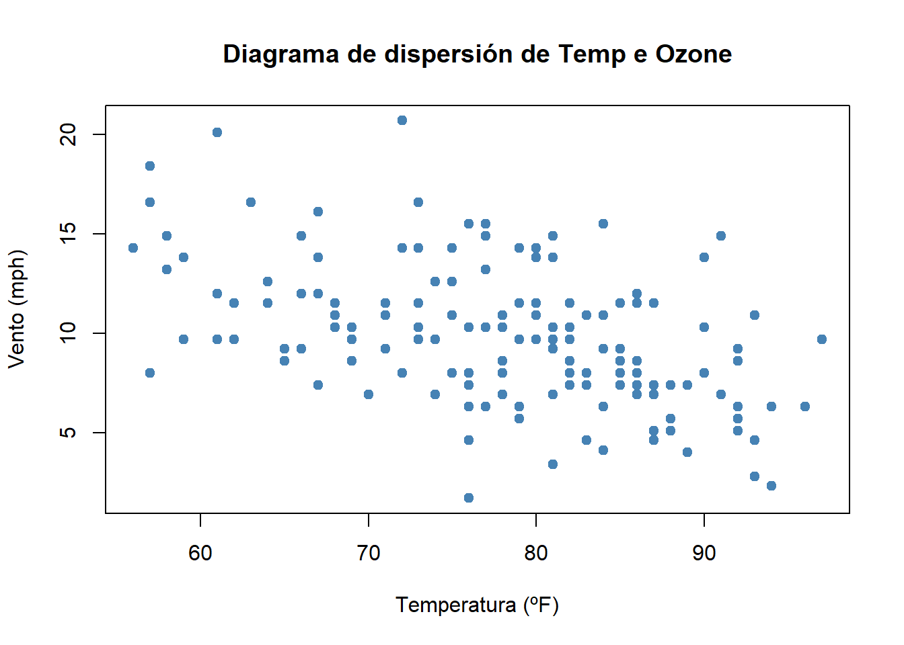
Se queremos analizar varias variables á vez, podemos usar pairs() para facer un diagrama de dispersión matricial.
vars <- airquality[, c("Ozone", "Temp", "Wind")]
pairs(vars, main = "Diagrama de dispersión múltiple", pch = 19, col = "steelblue")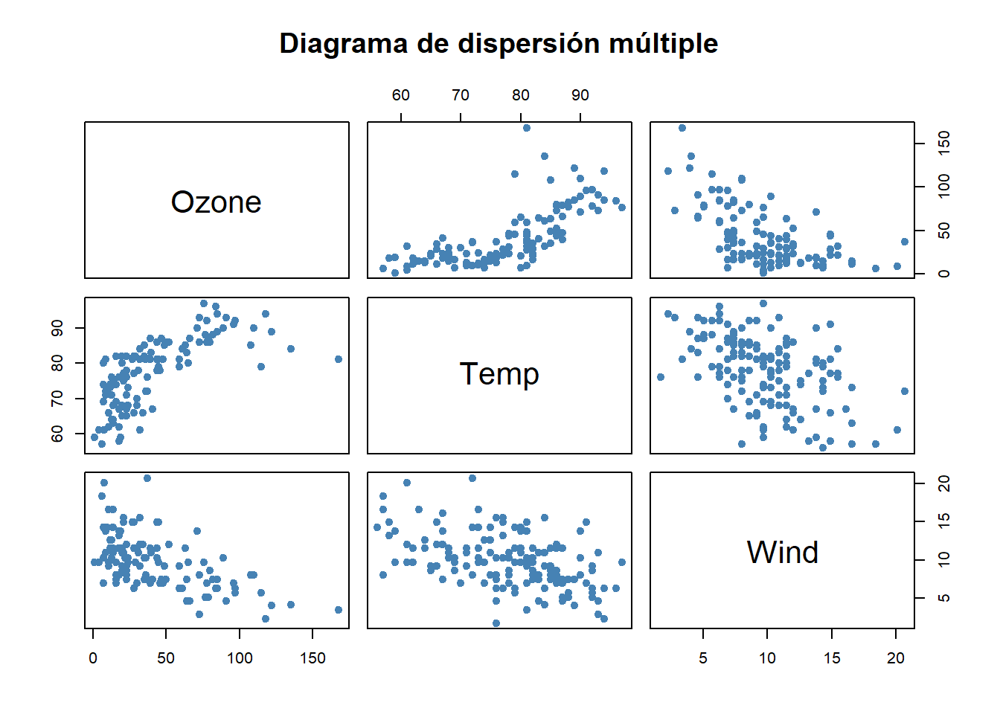
A covarianza mide a variabilidade conxunta de dúas variables. En R calcúlase a covarianza corrixida (con denomidar \(n-1\)) coa función cov(). A correlación estandariza a covarianza para que teña valores entre -1 e 1, permitindo comparar a forza da relación entre variables con distintas unidades. En R calcúlase coa función cor(). Calculamos a continuación a covarianza corrixida e a correlación entre a temperatura e a valocidade do vento.
cov(x, y)
cor(x, y)Se agora queremos analizar Temp e Ozone, debemos ter en conta que airquality$Ozone contén algúns valores NA. Se tentamos calcular directamente covarianza ou correlación, R devolverá NA. Para solucionar isto, usamos o argumento use = "complete.obs", que indica a R que só considere os pares de valores completos (sen NA):
z <- airquality$Ozone
cov(x, z, use = "complete.obs")
cor(x, z, use = "complete.obs")1.6 Táboa resumo de procedementos e funcións
A seguinte táboa resume os principais cálculos e visualizacións estatísticas comentados no tema, xunto coas funcións correspondentes en R.
| Procedementos | Funcións |
|---|---|
| Tamaño muestral | length() |
| Táboas | table() |
| Sumas acumuladas | cumsum() |
| Diagrama de barras | barplot() |
| Diagrama de sectores | pie() |
| Histograma | hist() |
| Diagrama de caixa | boxplot() |
| Resumo de medidas | summary() |
| Media | mean() |
| Cuasivarianza | var() |
| Mediana | median() |
| Cuantil | quantile() |
| Rango intercuartílico | IQR() |
| Rango | diff() e range() |
| Asimetría | skewness() |
| Curtose | kurtosis() |
| Marxinais | addmargins() |
| Diagrama de dispersión | plot() |
| Matriz de dispersión | pairs() |
| Covarianza (corrixida) | cov() |
| Correlación | cor() |
A táboa seguinte recolle outras funcións básicas auxiliares.
| Outros procedementos | Función |
|---|---|
| Instalar paquete | install.packages() |
| Cargar paquete | library() |
| Primeira parte dun obxecto | head() |
| Nomes de obxecto | names() |
1.7 EXERCICIOS
NotaBoletín de exercicios

NotaArquivos de datos